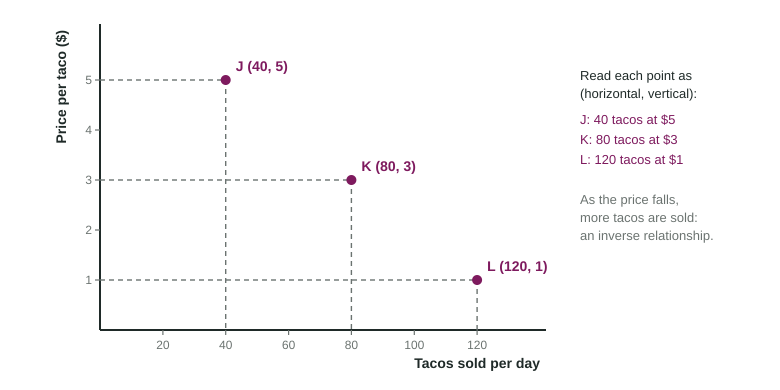

Axes, Variables and Points
A graph has two labeled axes: the horizontal axis (x) and the vertical axis (y).
Part 1 · Hook
Why this matters
Part 2 · See it
See it first

Part 3 · Step by step
How it works, step by step
- You pick the two variables to compareone goes on the horizontal axis and one on the vertical axis, each labeled with its name and units
- Each row of a table gives one value of each variableit becomes one ordered pair (horizontal value, vertical value)
- You plot every ordered pairthe points show a pattern you can read at a glance
- The points rise to the right or fall to the rightthe variables have a direct or an inverse relationship
Part 4 · Key ideas
Key ideas
- The horizontal axis (x-axis) runs left to right; the vertical axis (y-axis) runs up. On a market graph, quantity goes across and price goes up.
- An ordered pair (x, y) names one point: first the horizontal value, then the vertical value.
- To read a point, drop a line straight down to the horizontal axis and across to the vertical axis.
- A direct relationship: both variables rise together, so the points rise to the right. An inverse relationship: one rises as the other falls, so the points fall to the right.
- Label both axes every time. An unlabeled axis loses the graph point on the exam.
Part 5 · Misconception
A common mistake
The wrong idea: On a graph with tacos across and price up, the ordered pair (80, 3) means 3 tacos at a price of $80.
What actually happens: The first number is always the horizontal value. With quantity across and price up, (80, 3) means 80 tacos at a price of $3.
Part 6 · Check yourself
Check yourself
Exam-style questions. Anything you miss goes into your review queue.
1. On a market graph in this course, which variable goes on the horizontal axis?
- The price of the good
- The number of sellers
- The quantity of the good
- The time of year
Show the answer
Market graphs put quantity across the bottom and price up the side. Mixing them up flips every curve.
- The price of the good: Price goes on the vertical axis of a market graph.
- The number of sellers: The number of sellers is not an axis of a market graph.
- Correct: The quantity of the good: Right: quantity runs along the horizontal axis.
- The time of year: Time is not one of the two axes on a market graph.
2. A graph has tacos sold per day on the horizontal axis and price per taco on the vertical axis. What does the ordered pair (60, 4) describe?
- 60 tacos sold at a price of $4
- 4 tacos sold at a price of $60
- A price of $60 for 4 days
- 64 tacos sold in total
Show the answer
The first number is the horizontal value (tacos sold) and the second is the vertical value (price).
- Correct: 60 tacos sold at a price of $4: Right: horizontal value first, then vertical.
- 4 tacos sold at a price of $60: This reverses the order: the first number is the horizontal value.
- A price of $60 for 4 days: Neither axis measures days.
- 64 tacos sold in total: An ordered pair is two separate values, never a sum.
Data
Calle Verde Taco Truck: price and tacos sold
| Price per taco ($) | Tacos sold per day |
|---|---|
| 1 | 120 |
| 2 | 100 |
| 3 | 80 |
| 4 | 60 |
| 5 | 40 |
3. With tacos sold on the horizontal axis and price on the vertical axis, which ordered pair plots the row for a price of $2?
- (2, 100)
- (100, 200)
- (2, 2)
- (100, 2)
Show the answer
At $2 the truck sells 100 tacos. Tacos sold is the horizontal value, so it comes first: (100, 2).
- (2, 100): This puts the price first, but price is on the vertical axis.
- (100, 200): The price is $2, not $200.
- (2, 2): At $2 the truck sells 100 tacos, not 2.
- Correct: (100, 2): Right: (tacos sold, price) = (100, 2).
4. What relationship between price and tacos sold does the table show?
- A direct relationship: as the price rises, more tacos are sold
- An inverse relationship: as the price rises, fewer tacos are sold
- No relationship: tacos sold stay the same
- A direct relationship, because both columns hold numbers
Show the answer
As the price goes from $1 to $5, tacos sold fall from 120 to 40. One rises while the other falls: inverse.
- A direct relationship: as the price rises, more tacos are sold: Tacos sold fall as the price rises, so the relationship is not direct.
- Correct: An inverse relationship: as the price rises, fewer tacos are sold: Right: price up, tacos sold down.
- No relationship: tacos sold stay the same: Tacos sold change in every row.
- A direct relationship, because both columns hold numbers: A relationship is about how the values move together, not about both being numbers.
5. Label both axes and both curves of this market graph.
Work on the graph (it needs JavaScript), then check.
Show the answer
On a market graph, price goes on the vertical axis and quantity on the horizontal axis. The downward curve is D and the upward curve is S.
- Key: see the explanation
6. A point sits at (0, 7) on a graph with quantity across and price up. Where is it?
- On the vertical axis, at a price of 7
- On the horizontal axis, at a quantity of 7
- At the origin, where the axes meet
- Off the graph, because 0 is not a value
Show the answer
A horizontal value of 0 means no distance to the right, so the point sits on the vertical axis, 7 units up.
- Correct: On the vertical axis, at a price of 7: Right: zero across, 7 up.
- On the horizontal axis, at a quantity of 7: A point on the horizontal axis has a vertical value of 0, like (7, 0).
- At the origin, where the axes meet: The origin is (0, 0).
- Off the graph, because 0 is not a value: Zero is a value; it places the point on an axis.
Part 7 · Summary
Summary
Part 8 · Up next
What comes next
Part 9 · Connections